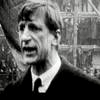

The Civil War

DeValera was opposed to the terms of this treaty which included an oath of allegiance to the King of England. On the 7th of January 1922 the members of Dail Eirann voted upon this treaty. They result was in favour of the treaty. However the margin in favour was very narrow. DeValera voiced his opinions of this treaty across the country. He rallied people up into frenzy and created emotions of hate and bitterness amongst Irish people towards the English and towards each other. On the 28th of June 1922 Civil War began in Ireland.
The war began with an attack on the Four Courts in Dublin. The war was fought between two sides. The regulars those in favour or the treaty and the irregulars those opposed. The fighting lasted many months with a great number of lives lost including Ireland’s new hero Michael Collins. Eventually the irregulars where defeated and Ireland became a Free State.